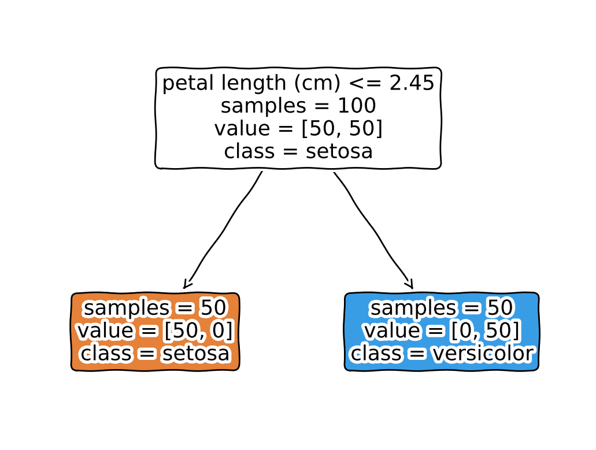
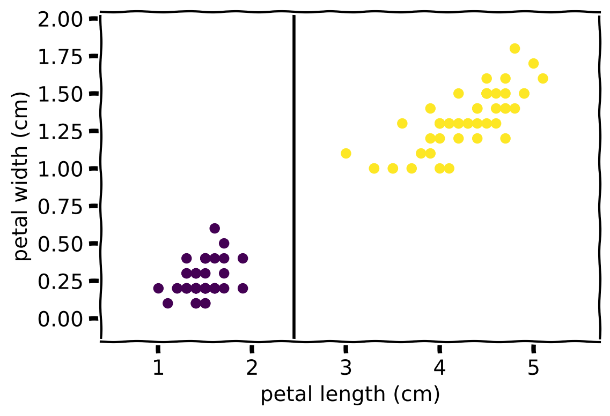
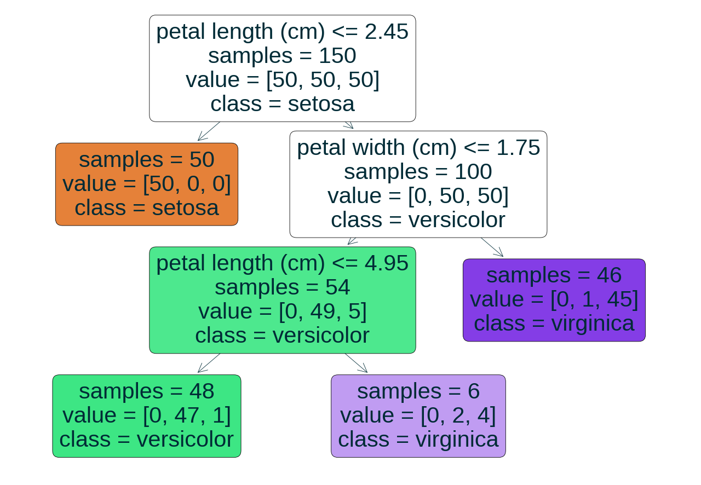

|--- petal length (cm) <= 2.45
| |--- class: 0
|--- petal length (cm) > 2.45
| |--- petal width (cm) <= 1.75
| | |--- petal length (cm) <= 4.95
| | | |--- class: 1
| | |--- petal length (cm) > 4.95
| | | |--- class: 2
| |--- petal width (cm) > 1.75
| | |--- class: 2
Decision Trees
Kacper Sokol
Model Overview
Model Synopsis
A decision tree predicts the target by applying logical conditions to the input features, until a terminal node, i.e., a leaf, is reached. The (sequential) structure makes the model transparent. A prediction is estimated as the average value (regression) or majority class (crisp classification) of the training instances based on which this leaf was built.
The learning algorithm chooses a feature based on its ability to decrease the impurity of the data (subsets) after a split is made.
Model Synopsis
Decision trees can be interpreted though: model visualisation / textualisation, feature importance, exemplars, what-ifs, rules, and counterfactuals.
Toy Example
Toy Example
Explanation Properties
| Property | Classification and Regression Trees (CART) |
|---|---|
| relation | ante-hoc |
| compatibility | classification and regression trees (CART) |
| modelling | regression and crisp & probabilistic classification |
| scope | global, cohort and local |
| target | model, sub-space and prediction |
Explanation Properties
| Property | Classification and Regression Trees (CART) |
|---|---|
| data | tabular |
| features | numerical and categorical |
| explanation | model visualisation, feature influence & importance, rules, exemplars,what-ifs, counterfactuals |
| caveats | axis-parallel splits, target linearity |
Examples
Model Visualisation
Text Representation
Code Representation
def tree(sepal_length, sepal_width, petal_length, petal_width):
if petal_length <= 2.449999988079071:
return setosa
else: # if petal_length > 2.449999988079071
if petal_width <= 1.75:
if petal_length <= 4.950000047683716:
return versicolor
else: # if petal_length > 4.950000047683716
return virginica
else: # if petal_width > 1.75
return virginicaFeature Importance
Node \(n\) importance \(i(n)\) (based on weighted impurity \(C\))
\[ i(n) = \frac{|X_n|}{|X|} C(n) - \frac{|X_{\mathit{left}(n)}|}{|X|} C(\mathit{left}(n)) - \frac{|X_{\mathit{right}(n)}|}{|X|} C(\mathit{right}(n)) \]
Feature \(f\) importance \(I(f)\)
\[ I(f) = \frac{\sum_{n_f} i(n_f)}{\sum_n i(n)} \]
Feature Importance
Crisp classification – Gini impurity \(C^{\mathit{G}}\)
\[ C^{\mathit{G}}(n) = 1 - \sum_{c \in C}p_{n}^2(c)\\ p_{n}(c) = \frac{1}{|X_n|} \sum_{(x, y) \in (X_n, Y_n)} \mathbb{1}_{y = c} \]
Regression or probabilistic classification – mean squared error \(C^{\mathit{MSE}}\)
\[ C^{\mathit{MSE}}(n) = \frac{1}{|X_n|} \sum_{(x, y) \in (X_n, Y_n)} (y - \bar{y}_{n})^2 \\ \bar{y}_{n} = \frac{1}{|X_n|} \sum_{(x, y) \in (X_n, Y_n)} y \]
Feature Importance

Exemplar Explanation
| sepal length (cm) | sepal width (cm) | petal length (cm) | petal width (cm) | tree leaf | |
|---|---|---|---|---|---|
| 42 | 4.4 | 3.2 | 1.3 | 0.2 | 1 |
| sepal length (cm) | sepal width (cm) | petal length (cm) | petal width (cm) | tree leaf | |
|---|---|---|---|---|---|
| 45 | 4.8 | 3.0 | 1.4 | 0.3 | 1 |
| 46 | 5.1 | 3.8 | 1.6 | 0.2 | 1 |
| 47 | 4.6 | 3.2 | 1.4 | 0.2 | 1 |
| 48 | 5.3 | 3.7 | 1.5 | 0.2 | 1 |
| 49 | 5.0 | 3.3 | 1.4 | 0.2 | 1 |
What-if Explanation
| sepal length (cm) | sepal width (cm) | petal length (cm) | petal width (cm) | tree leaf | |
|---|---|---|---|---|---|
| 42 | 4.4 | 3.2 | 1.3 | 0.2 | 1 |
Predicted as setosa
| sepal length (cm) | sepal width (cm) | petal length (cm) | petal width (cm) | tree leaf | |
|---|---|---|---|---|---|
| 0 | 4.4 | 3.2 | 2.7 | 0.2 | 5 |
Predicted as versicolor
Rule Explanation
if (petal length (cm) <= 2.45)
then class: setosa
if (petal length (cm) > 2.45)
and (petal width (cm) <= 1.75)
and (petal length (cm) <= 4.95)
then class: versicolor
if (petal length (cm) > 2.45)
and (petal width (cm) > 1.75)
then class: virginica
if (petal length (cm) > 2.45)
and (petal width (cm) <= 1.75)
and (petal length (cm) > 4.95)
then class: virginica
Counterfactual Explanation
If petal length (cm) changes from 1.3 to 2.7, the prediction will change from setosa to versicolor.
| sepal length (cm) | sepal width (cm) | petal length (cm) | petal width (cm) | |
|---|---|---|---|---|
| 42 | 4.4 | 3.2 | 1.3 | 0.2 |
Properties
Pros
Transparent from the outset due to their underlying (sequential) structure – predictions are derived by evaluating a series of logical conditions
Easy to interpret (given relevant background knowledge)
Feature correlation is not that much of a problem
Capable of modelling nonlinear relations
Cons
- Limited to axis-parallel splits (unless oblique trees are used)
- This restriction impacts their ability to model linear relationships (since staggered boundaries must be created)
- It also causes non-smooth predictions (prediction changes once a threshold is crossed)
Cons
- The training procedure is greedy, hence the model structure may be unstable
- Large trees may become overwhelming and incomprehensible, but still transparent
- Tree size can be reduced with pruning
Caveats
- Interpreting large trees may be challenging without further (algorithmic) processing
Further Considerations
Summary
- (Small) decision trees are transparent
- They offer a wide array of explanatory insights
Implementations
| Python | R |
|---|---|
| scikit-learn | rpart |
Further Reading
- scikit-learn guide
- Interpretable Machine Learning book
- Machine learning: The art and science of algorithms that make sense of data textbook (Flach 2012)
Bibliography
Flach, Peter. 2012. Machine Learning: The Art and Science of Algorithms That Make Sense of Data. Cambridge university press.
Questions